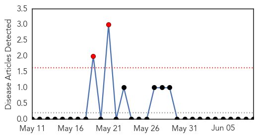
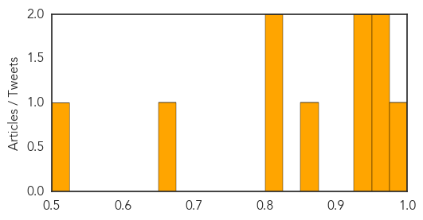

Yellow Fever
30-Day Web Trend
2 alerts, 0 warnings

30-Day Twitter Trend
0 alerts, 0 warnings

Article Locations

Article Confidences

Top Articles:
-
No articles found for Jun 09, 2015
Top Tweets:
-
No tweets found for Jun 09, 2015
Measles
30-Day Web Trend
0 alerts, 0 warnings

30-Day Twitter Trend
1 alerts, 0 warnings

Article Locations

Article Confidences
Top Articles:
- 0.994
- (Yonhap Interview) S. Koreans should not be 'overly panicked' over MERS outbreak: U.S. expert
- 0.958
- Health officials tracing path of woman with rare TB
- 0.951
- Health Officials Work Frantically To Stop Potential Spread Of Rare Form Of Tuberculosis
- 0.950
- Health officials locating people who might have come in contact with woman with rare TB
- 0.930
- Woman With Rare Tuberculosis at NIH in Bethesda
- 0.860
- End personal and religious vaccine exemptions: American Medical Association - National
- 0.805
- Pediatric vaccines industry in Canada to 2020 scrutinized in new research
- 0.801
- Firefighters remain alert for measles
- 0.654
- Doctors' group looks to ban nonmedical vaccine exemptions
- 0.513
- Centre’s expert team in Tripura to probe JE vaccine deaths
Top Tweets:
-
No tweets found for Jun 09, 2015